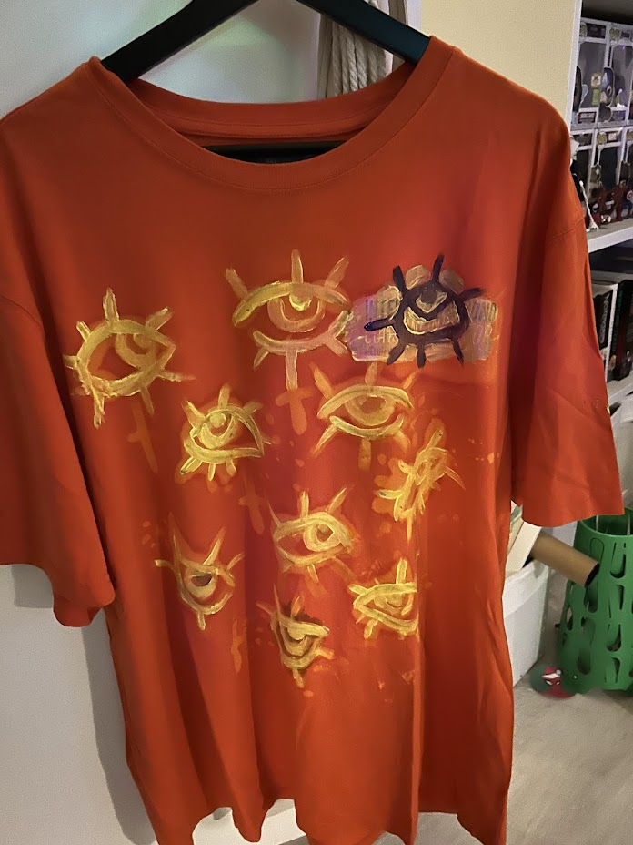
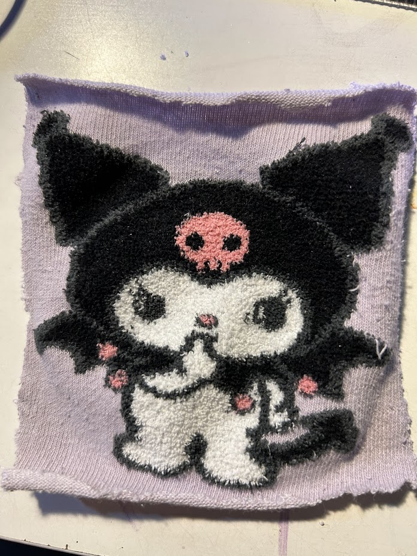

DIY ideën
Textiel Bleken
Neem een textiel product naar keuze bv een shirt. De kleur van het shirt maakt niet uit als het maar geen lichte kleur is. Neem een plastic bakje en voeg 1/3 water en 2/3 bleek toe en mix. schuif een plaat karton tussen de lagen texiel om de andere kant te beschermen. Nu kan je met een oude verf kwast het bleek mengsel gebruiken om op je textiel te verfen. Na dat je klaar bent met verfen laat het drogen en daarna stop je het in de was zonder andere kleding stukken. TIP: Als je verfen lastig vind kan je ook een stencil tegen het shirt plakken en dan de bleek voorzigtig er overheen verspreiden.
1
Van stof naar patch
Deze DIY werkt met elke stof. Dit is ook leuk om te doen met oude sokken die een leuke print hebben. Je knipt de stof uit in de vorm die je wilt leg de vorm op een andere stof, deze vormt de achterkant. Naai de twee stukjes e aan elkaar met een naaimachine of met de hand. Knip de vorm uit en nu heb je een patch die je op jasjes of andere kledingstukken kan bevestigen.
2
Vintage Meubel
Bij aankoop van een vintage meubulair kan het zijn dat de kleur toch niet helemaal in jouw huis past. Je kan simpelweg het meubel upcyclen zodat het in jouw stijl is. Eerst moet het item geschuurd worden, let wel op het dragen van een mondkapje zodat je geen last krijgt van het stof. Na deze stap kan je het meubel verfen met een kleur na keuze. Na dat de verf droog is kan je het nog afmaken met een lak om de verflaag te beschermen. Als je nog extra verandering wilt toepassen kan je ook de hendels van het meubelair af halen en eigen hendels monteren..